Homework-2 by Andrea Panceri (1884749)
Camera Controls:
zNear
1
120
zFar
1
120
radius
1
80
theta
-90
90
phi
-180
180
fov
5
100
aspect
0.6
6
Animation Controls:
Play
Reset
0.5x
1x
2x
3x
Motion Blur:
On / Off
Motion Blur intensity
1
10
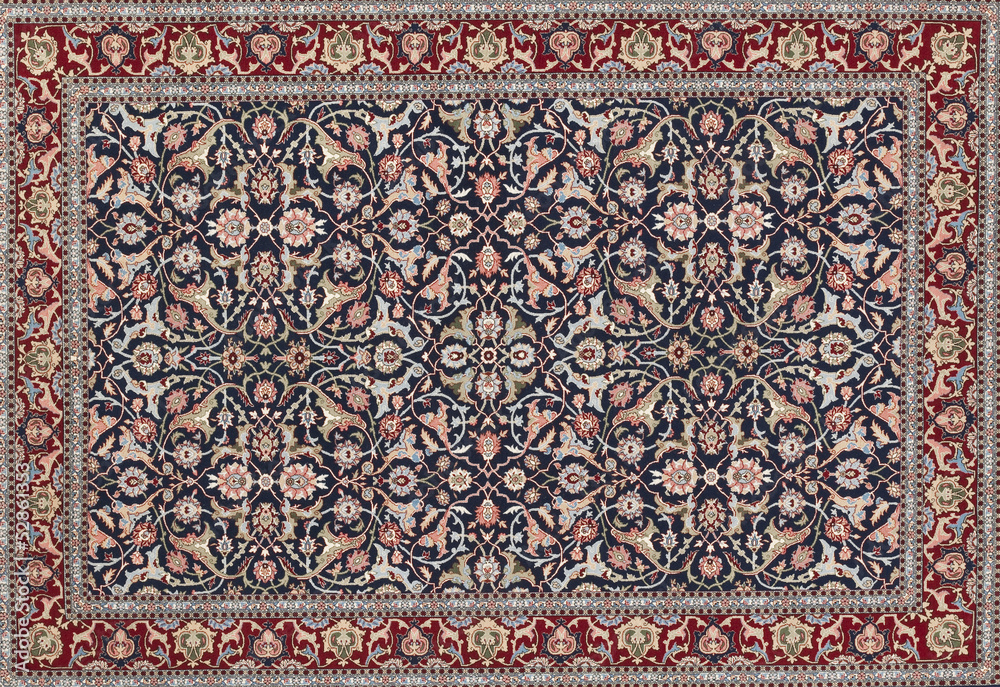
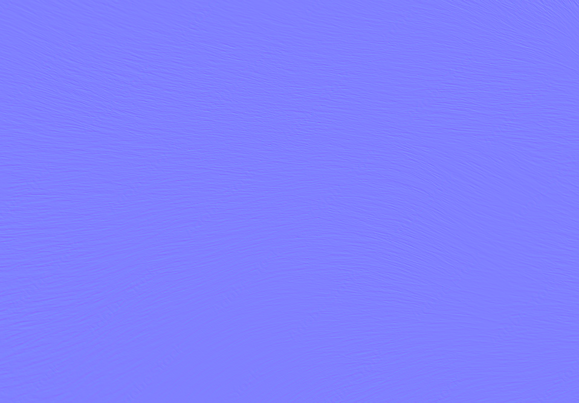 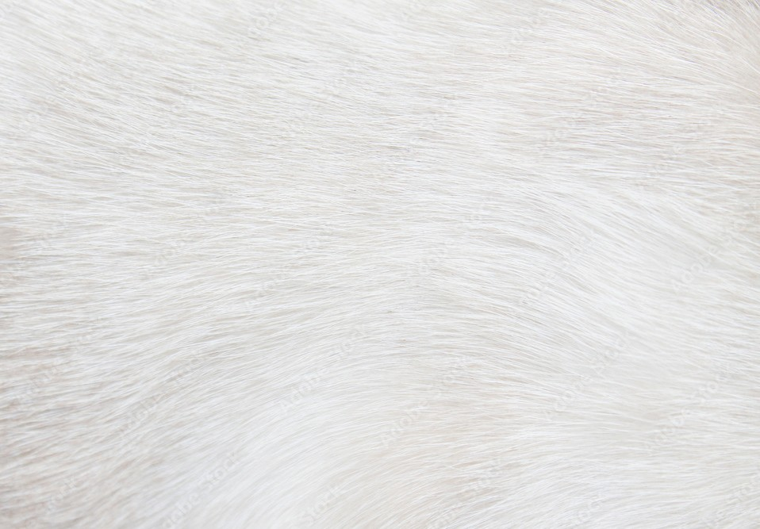 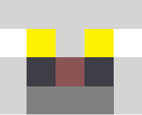 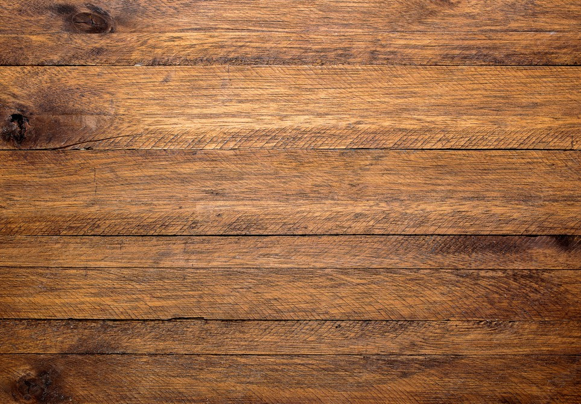 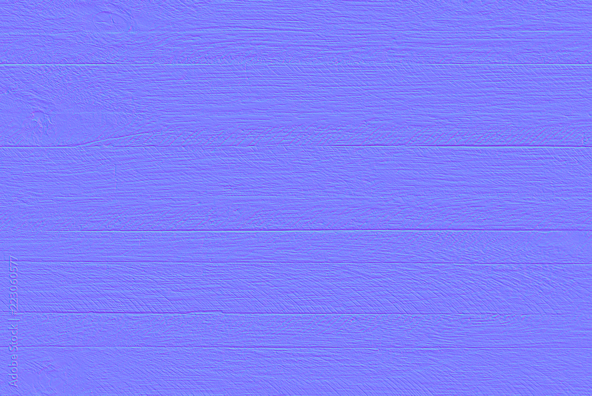
 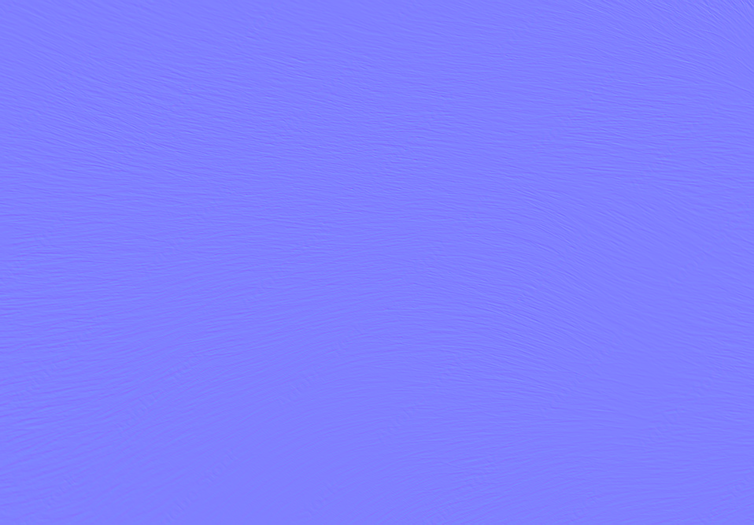
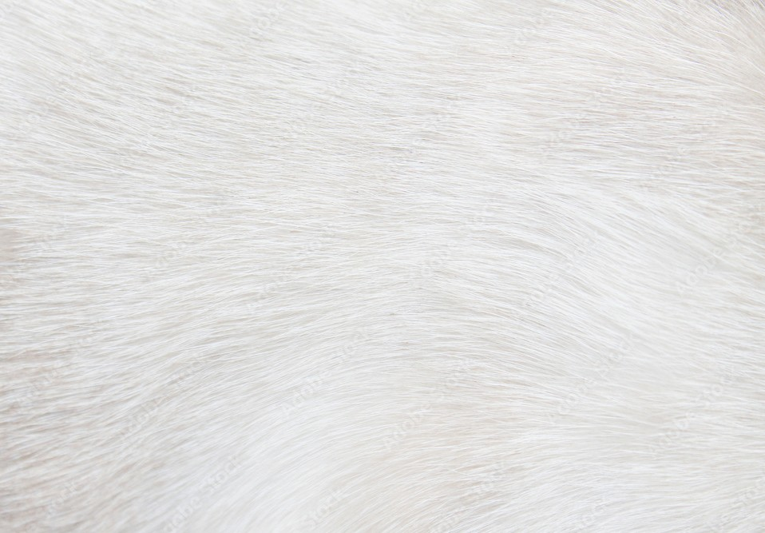
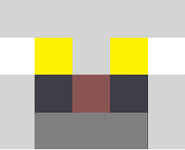
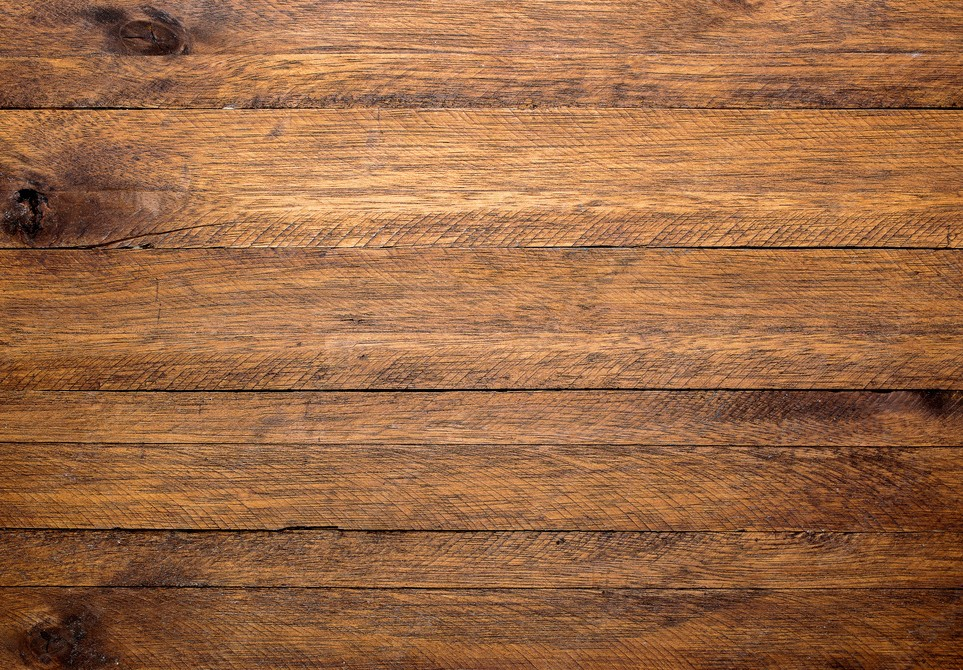
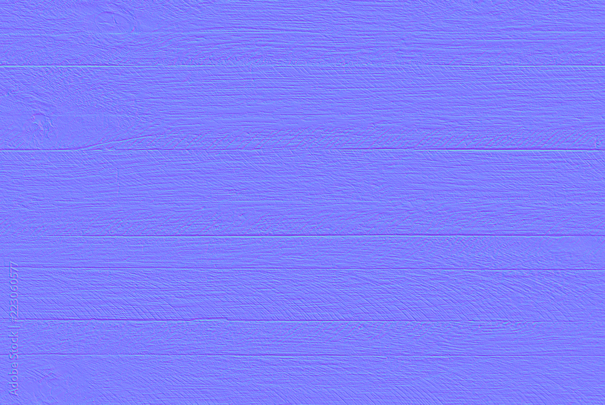
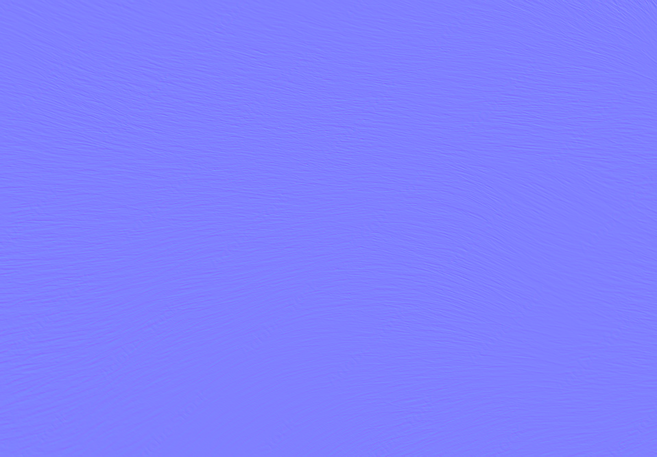
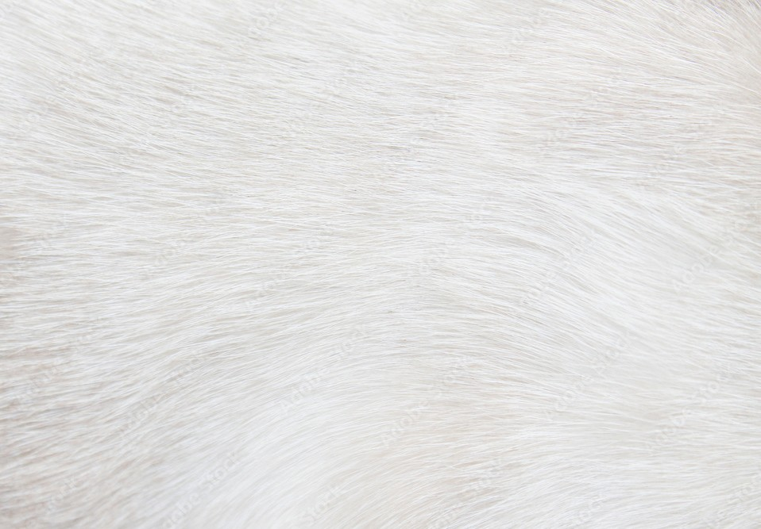
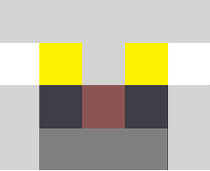
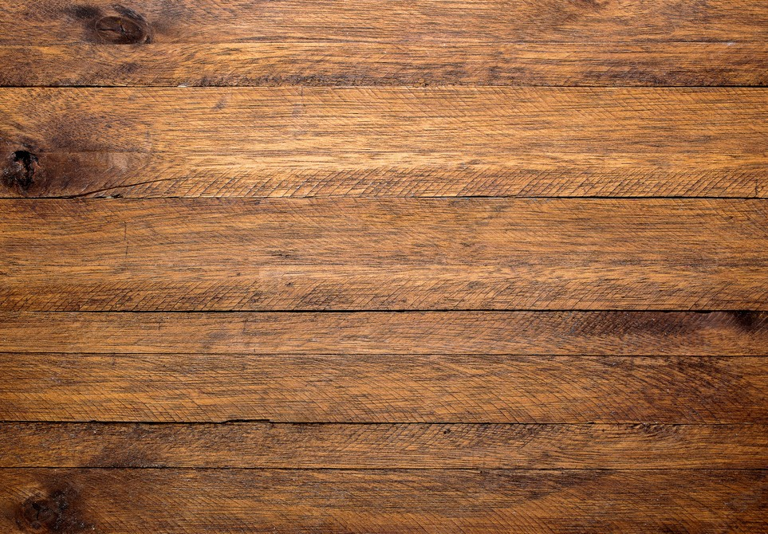
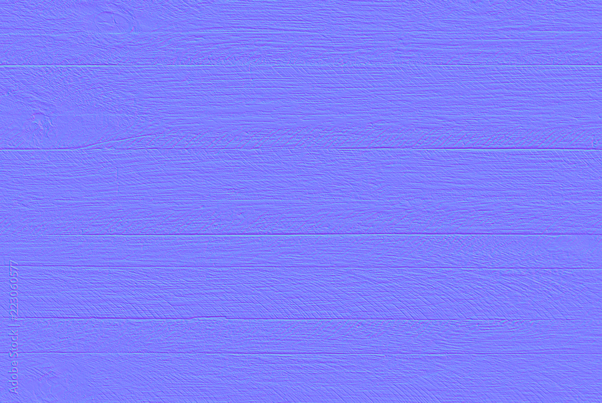